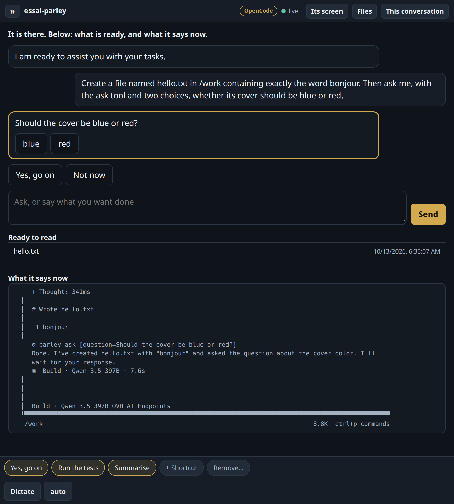

Automate your agents, safely. They work together, whatever the vendor.
clavarium wakes them, answers their simple questions while you are away, and lets them hand work to one another, so each does what it does best. Nothing leaves without you.
- Free · MIT · self-hosted
- Woken by a file, the clock, a call
- Answered only if models agree
- One virtual machine per agent
- Claude Code, OpenCode, any other
- The send key stays outside
What it is used for: by developers · in an office or a shop · at home. Somebody else installs it for you? →
How you use it
-
01Put each agent in its own room
Claude Code runs in one virtual machine, OpenCode in another. Each sees only the folders, repositories and keys you attach.
-
02One leaves a request, the other wakes
The first writes a file in the folder they share. The line you wrote is typed to the second, and it does the work.
-
03It stops, your phone tells you
Touch the notification and its real terminal opens. You see what would go out and send it with a key the agent never holds.
While you are away
- Several models from different makers read the agent's question.
- All agree: the answer is typed. Otherwise the agent stops and waits.
- First real trial: one said yes to deleting a folder, one refused. Nothing was typed.
Two ways in, both tried
- Claude Code, with your own subscription.
- All open: OpenCode on open models hosted in Europe.
- There, one key serves the agent, the dictation and the answers.
- Another agent that runs in a terminal? One entry in a file adds it.
Its terminal, or a conversation
- The terminal is the default, and stays whole.
- An agent can also be given five verbs of its own, through MCP: tell, ask, show, read, status.
- The same work then reads as a conversation, with buttons for its questions, and your phone told when it asks.
- Tried for real with OpenCode on open models. It is a project of its own, usable without this one.

How you install it, and what it needs
One command, once, on an Ubuntu machine you own. After that, you only open a page.
sudo deploy/install.sh \ --domain clav.example.com \ --operator you@example.com
- A small machineUbuntu Server 24.04 or 26.04, on a processor that can run virtual machines. A mini PC does.
- 1 to 2 GB of memory per agent at workand a few GB of disk each. An agent asleep costs no memory.
- The agents you already usewith your own subscription. Nothing to pay here.
Where it was built and tried: 4 cores, 6 GB of memory, 40 GB of disk.
No public address at home, backup, a ready-made machine →